Мои работы
Здесь собраны мои работы – короткие и длинные, квадрат и миндаль, нежные оттенки и яркие акценты. Если что-то понравилось, покажите фото на записи – подберём похожее под ваши ногти.
ДЕМОНСТРАЦИЯ! НЕ ОФИЦИАЛЬНЫЙ САЙТ БИЗНЕСА
Екатеринбург проспект Ленина 38А 4 этаж
Меня зовут Катя, я мастер маникюра.
Кабинет маникюра в центре Екатеринбурга. Помогу подобрать форму и покрытие под ваши ногти – аккуратно, спокойно и с любовью к деталям.
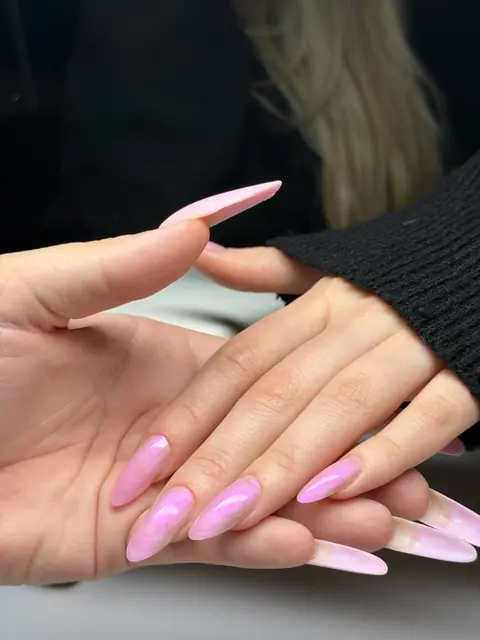
Маникюр, покрытие гель-лаком и наращивание – от лаконичного nude до дизайна, который захочется разглядывать. Вместе подберём форму, длину и цвет, а если хочется сохранить свои ногти и отрастить длину, подскажу, как к этому прийти.
Аккуратные ногти, которые держатся 4 недели, – то, к чему я стремлюсь в каждой работе.
1300 ₽
1 ч
2000 ₽
2 ч
2500 ₽
3 ч
300 ₽
1 ч
Меня зовут Катя, я мастер маникюра. Когда-то это было детское увлечение, а сейчас – дело, в котором я на своём месте и каждый день с удовольствием творю в своём кабинете.
Для меня маникюр – это больше, чем красивое покрытие. Мне важно, чтобы ногти радовали вас не только в день процедуры, но и спустя время: были крепкими, аккуратными и удобными каждый день. Поэтому я внимательно отношусь к подготовке ногтей, учитываю их особенности и подбираю технику под каждую клиентку.
Мой кабинет – небольшое уютное пространство, где можно выдохнуть. Пока я работаю, можно включить свой сериал, а к нему – вода или сок на выбор и конфетки. Время проходит незаметно, а уходите вы с ногтями, которыми хочется любоваться.
Здесь собраны мои работы – короткие и длинные, квадрат и миндаль, нежные оттенки и яркие акценты. Если что-то понравилось, покажите фото на записи – подберём похожее под ваши ногти.
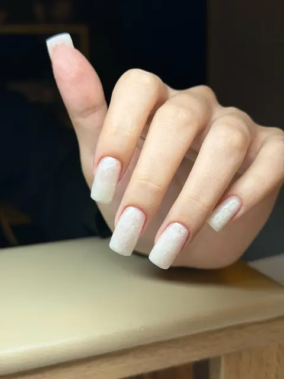

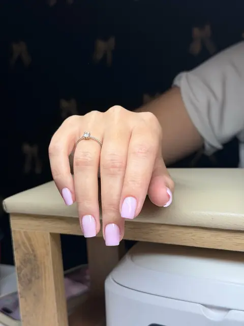
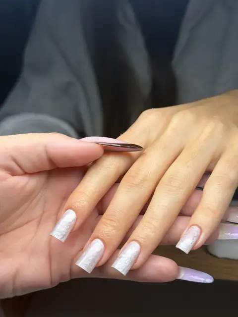

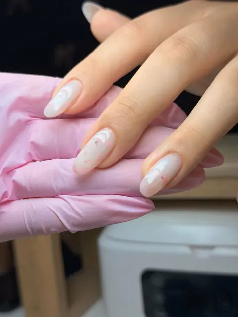
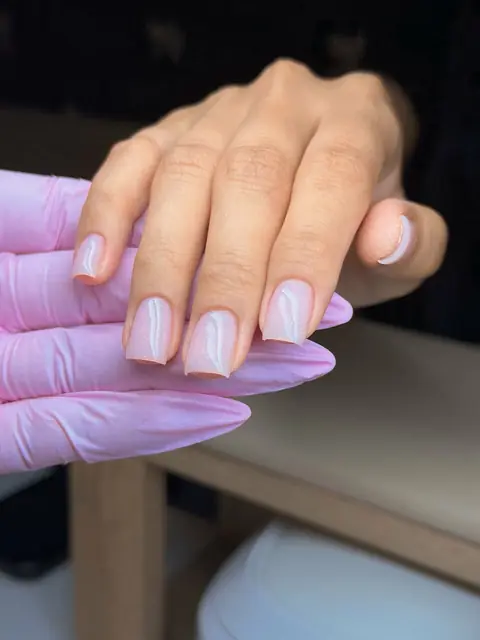


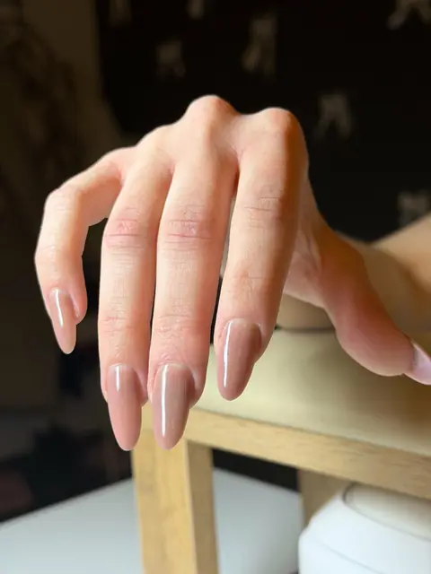
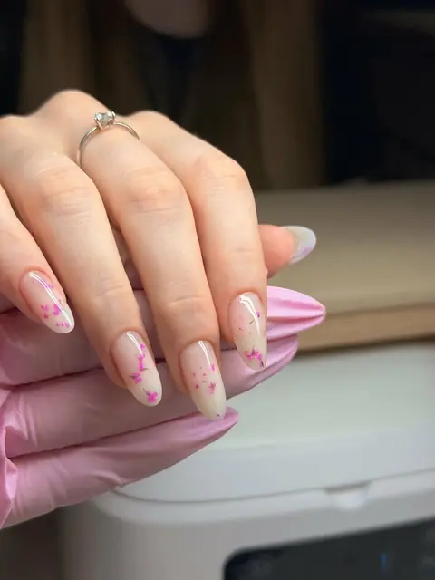

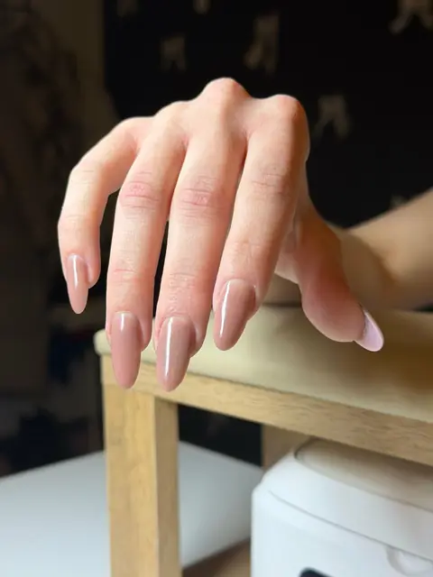


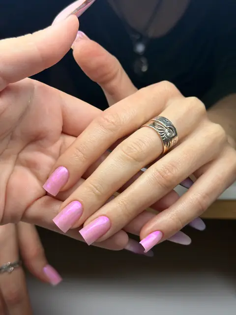
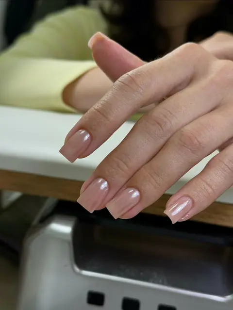

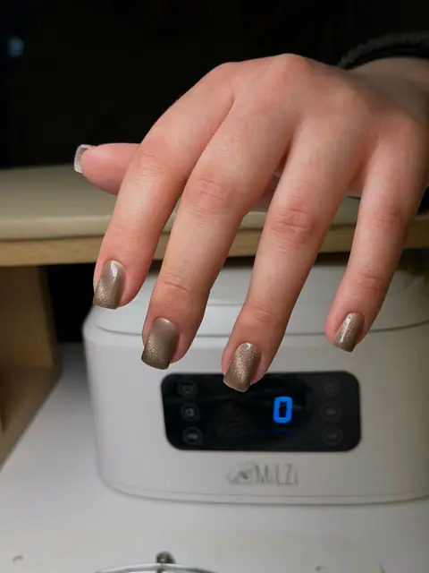
Катя прекрасный мастер! Мои руки никогда не выглядели так красиво и аккуратно как с ней😍 Как мастер она просто чудо, отличный сервис, качественные работы и приятные презенты после каждого визита ❤️
Маникюр — огонь 🔥Идеальная форма, аккуратная кутикула, а еще приятная атмосфера под просмотр турецкого сериала. Цвет и дизайн — любовь с первого взгляда. Спасибо мастеру! Рекомендую 💅
Очень аккуратно, быстро, приятная атмосфера🥰 Рекомендую обязательно
✨ Просто восторг! 😍 Стильно 😍 Спасибо за красоту и приятную атмосферу! 💅
Буду рада познакомиться! Выберите удобное окошко онлайн или напишите мне – подберём время вместе.
Записаться онлайнПозвонитьНаписать в Telegram
Проспект Ленина, 940 м от м. Площадь 1905 года. Кабинет на 4 этаже, в «Ленин-офисе».
пр. Ленина 38А, каб. 416
Показать карту